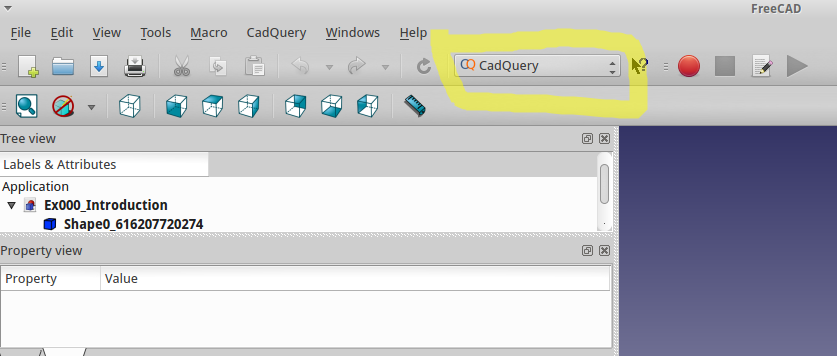
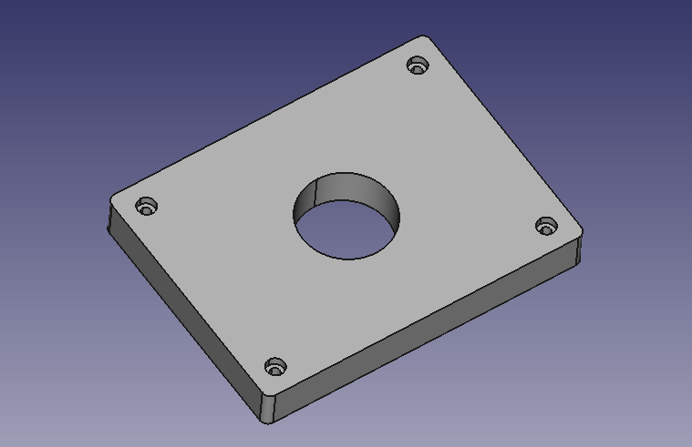
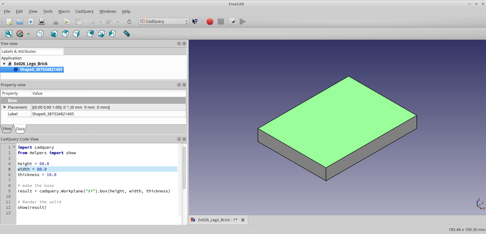
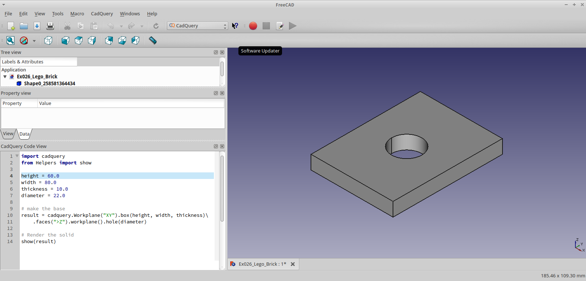
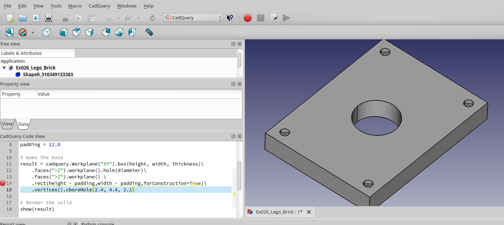
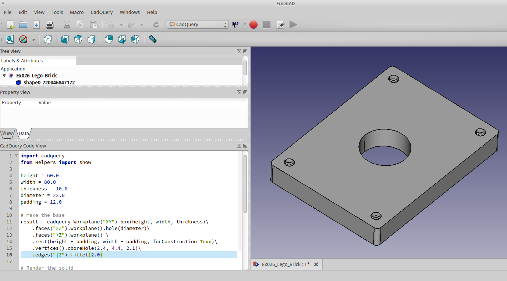

CadQuery QuickStart¶
Want a quick glimpse of what CadQuery can do? This quickstart will demonstrate the basics of cadQuery using a simple example
Prerequisites: FreeCAD + cadQuery-freeCAD-module in FreeCAD¶
If you have not already done so, follow the Installing CadQuery, and to install cadquery, FreeCAD, and the cadquery-freecad-module
After installation, open the CadQuery workbench:
You’ll see that we start out with a single block. Find the cadquery Code Window, at the bottom left.
If you want check out a couple of the examples in the CadQuery->Examples menu.
What we’ll accomplish¶
We will build a fully parametric bearing pillow block in this quickstart. Our finished object will look like this:
We would like our block to have these features:
- It should be sized to hold a single 608 ( ‘skate’ ) bearing, in the center of the block.
- It should have counter sunk holes for M2 socket head cap screws at the corners
- The length and width of the block should be configurable by the user to any reasonable size.
A human would describe this as:
“A rectangular block 80mm x 60mm x 30mm , with countersunk holes for M2 socket head cap screws at the corners, and a circular pocket 22mm in diameter in the middle for a bearing”
Human descriptions are very elegant, right? Hopefully our finished script will not be too much more complex than this human-oriented description.
Let’s see how we do.
Start With A single, simple Plate¶
Lets start with a simple model that makes nothing but a rectangular block, but with place-holders for the dimensions. Paste this into the CodeWindow:
1 2 3 4 5 6 7 8 9 | height = 60.0
width = 80.0
thickness = 10.0
# make the base
result = cq.Workplane("XY").box(height, width, thickness)
# Render the solid
show_object(result)
|
Press F2 to run the script. You should see Our basic base.
Nothing special, but its a start!
Add the Holes¶
Our pillow block needs to have a 22mm diameter hole in the center of this block to hold the bearing.
This modification will do the trick:
1 2 3 4 5 6 7 8 9 10 11 | height = 60.0
width = 80.0
thickness = 10.0
diameter = 22.0
# make the base
result = cq.Workplane("XY").box(height, width, thickness)\
.faces(">Z").workplane().hole(diameter)
# Render the solid
show_object(result)
|
Rebuild your model by pressing F2. Your block should look like this:
The code is pretty compact, lets step through it.
Line 4 adds a new parameter, diameter, for the diamter of the hole
Line 8, we’re adding the hole.
cadquery.CQ.faces() selects the top-most face in the Z direction, and then
cadquery.CQ.workplane() begins a new workplane located on this face. The center of this workplane
is located at the geometric center of the shape, which in this case is the center of the plate.
Finally, cadquery.Workplane.hole() drills a hole through the part 22mm in diamter
Note
Don’t worry about the CadQuery syntax now.. you can learn all about it in the CadQuery API Reference later.
More Holes¶
Ok, that hole was not too hard, but what about the counter-bored holes in the corners?
An M2 Socket head cap screw has these dimensions:
- Head Diameter : 3.8 mm
- Head height : 2.0 mm
- Clearance Hole : 2.4 mm
- CounterBore diameter : 4.4 mm
The centers of these holes should be 4mm from the edges of the block. And, we want the block to work correctly even when the block is re-sized by the user.
Don’t tell me we’ll have to repeat the steps above 8 times to get counter-bored holes? Good news!– we can get the job done with just two lines of code. Here’s the code we need:
1 2 3 4 5 6 7 8 9 10 11 12 13 14 15 16 | height = 60.0
width = 80.0
thickness = 10.0
diameter = 22.0
padding = 12.0
# make the base
result = cq.Workplane("XY").box(height, width, thickness)\
.faces(">Z").workplane().hole(diameter)\
.faces(">Z").workplane() \
.rect(height - padding,width - padding,forConstruction=True)\
.vertices()\
.cboreHole(2.4, 4.4, 2.1)
# Render the solid
show_object(result)
|
After pressing F2 to re-execute the model, you should see something like this:

There is quite a bit going on here, so lets break it down a bit.
Line 5 creates a new padding parameter that decides how far the holes are from the edges of the plate.
Line 10 selects the top-most face of the block, and creates a workplane on the top of that face, which we’ll use to define the centers of the holes in the corners.
There are a couple of things to note about this line:
- The
cadquery.Workplane.rect()function draws a rectangle. forConstruction=True tells CadQuery that this rectangle will not form a part of the solid, but we are just using it to help define some other geometry.- The center point of a workplane on a face is always at the center of the face, which works well here
- Unless you specifiy otherwise, a rectangle is drawn with its center on the current workplane center– in this case, the center of the top face of the block. So this rectangle will be centered on the face
Line 11 draws a rectangle 8mm smaller than the overall length and width of the block,which we will use to locate the corner holes. We’ll use the vertices ( corners ) of this rectangle to locate the holes. The rectangle’s center is at the center of the workplane, which in this case co-incides with the center of the bearing hole.
Line 12 selects the vertices of the rectangle, which we will use for the centers of the holes.
The cadquery.CQ.vertices() function selects the corners of the rectangle
Line 13 uses the cboreHole function to draw the holes.
The cadquery.Workplane.cboreHole() function is a handy CadQuery function that makes a counterbored hole,
like most other CadQuery functions, operate on the values on the stack. In this case, since we
selected the four vertices before calling the function, the function operates on each of the four points–
which results in a counterbore hole at the corners.
Filleting¶
Almost done. Let’s just round the corners of the block a bit. That’s easy, we just need to select the edges and then fillet them:
We can do that using the preset dictionaries in the parameter definition:
1 2 3 4 5 6 7 8 9 10 11 12 13 14 15 16 | height = 60.0
width = 80.0
thickness = 10.0
diameter = 22.0
padding = 12.0
# make the base
result = cq.Workplane("XY").box(height, width, thickness)\
.faces(">Z").workplane().hole(diameter)\
.faces(">Z").workplane() \
.rect(height - padding, width - padding, forConstruction=True)\
.vertices().cboreHole(2.4, 4.4, 2.1)\
.edges("|Z").fillet(2.0)
# Render the solid
show_object(result)
|
Line 13 fillets the edges using the cadquery.CQ.fillet() method.
To grab the right edges, the cadquery.CQ.edges() selects all of the
edges that are parallel to the Z axis (“|Z”),
The finished product looks like this:

Done!¶
You just made a parametric, model that can generate pretty much any bearing pillow block with < 20 lines of code.
Want to learn more?¶
- Use the CadQuery->Examples menu of the cadquery workbench to explore a lot of other examples.
- The CadQuery Examples contains lots of examples demonstrating cadquery features
- The CadQuery API Reference is a good overview of language features grouped by function
- The CadQuery Class Summary is the hard-core listing of all functions available.